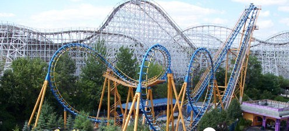

My ideal spring break would be traveling to Los Angles or San Francisco. I haven't visited Six Flags yet so I would love to go there this spring break. There are a lot of other places to visit in LA like: Newport beach, Baverly Hills, etc. I would also like to get a lot of rest, since I only get 6 to 7 hours of sleep every day. I'm trying to get good at Apex Legends so I can carry MO.
